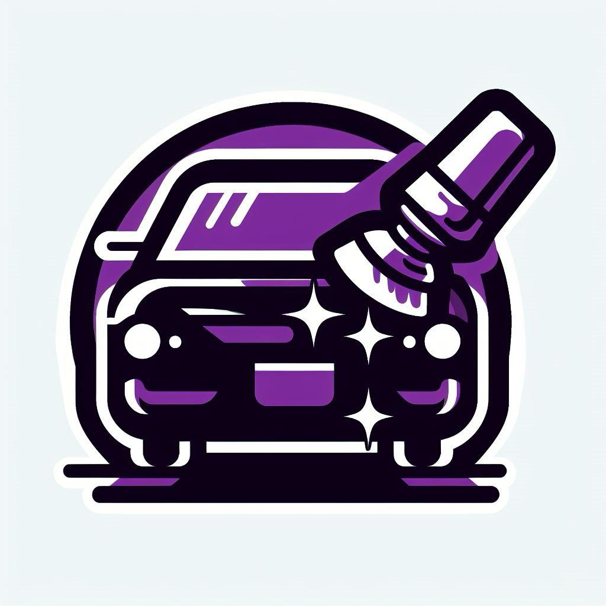
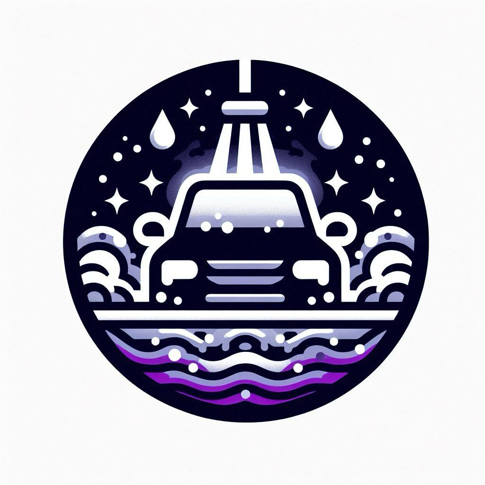
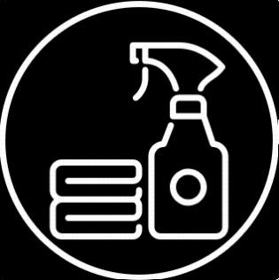

-
 €50
Limpieza exterior
• Este servicio consiste en lavar la carrocería, los cristales, las llantas y los neumáticos del coche, utilizando productos adecuados para cada superficie. Se elimina la suciedad, el barro, los insectos, las resinas y los alquitranes que se adhieren al exterior del coche. Se utiliza una máquina de agua a presión y se aplica una capa de cera o sellador para proteger la pintura y darle brillo. Este servicio ayuda a mantener el coche limpio y atractivo, y a prevenir la corrosión y los arañazos.
• Pulido y corrección de pintura: Este servicio consiste en eliminar los defectos e imperfecciones que tiene la pintura del coche, como los arañazos, los hologramas, los swirls o las marcas de agua. Se utiliza una pulidora rotativa o orbital, y se aplican diferentes tipos de pulimentos, desde los más abrasivos hasta los más finos, para ir corrigiendo los daños y nivelando la superficie. Luego se aplica una capa de cera o sellador para proteger el resultado. Este servicio ayuda a recuperar el color, el brillo y la profundidad de la pintura, y a mejorar el aspecto general del coche.
-
 €50
Limpieza interior
Este servicio consiste en limpiar el habitáculo del coche, incluyendo el salpicadero, la consola central, los paneles de las puertas, los asientos, el techo, el maletero y las alfombrillas. Se utiliza un aspirador para eliminar el polvo y los residuos, y se aplican productos específicos para cada tipo de material, como plástico, cuero, tela o goma. Se eliminan las manchas, los malos olores y las bacterias, dejando el interior del coche higienizado y con un aspecto renovado.
-
 €50
€50
Pulido de faros
Este servicio consiste en restaurar la transparencia y el brillo de los faros del coche, que se suelen opacar y amarillear con el paso del tiempo. Se utiliza una lija de agua para eliminar la capa superficial dañada, y se pule el plástico con un producto específico. Luego se aplica una capa de protección UV para evitar que se vuelvan a deteriorar. Este servicio ayuda a mejorar la visibilidad y la seguridad al conducir, y a darle un aspecto más joven al coche.
-
 €50
Limpieza de motor
Este servicio consiste en eliminar la suciedad, el polvo, el aceite y la grasa que se acumulan en el compartimento del motor. Se utiliza un producto desengrasante específico para motores y se aplica con una pistola de aire a presión. Luego se aclara con agua y se seca con una toalla. Este servicio ayuda a mejorar el rendimiento y la vida útil del motor, así como a prevenir posibles averías.